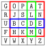

Beyond simple substitution there are several other interesting historical encryption schemes. The first we investigate is Playfair's Cipher, which performs a simple permutation on digraphs (two-letter words). Then we will discuss polyalphabetic substitution ciphers, which rely on a changing permutation to provide the encryption. Polyalphabetic substitutions are both historically relevant and theoretically interesting, as a particular type of polyalphabetic substitution gives us a provably unbreakable encryption method!
Subsection3.2.1Increasing the alphabet: Playfair's cipher
Since we see that a little frequency analysis can go a long way towards decryption when we permute characters, we have to consider another method which makes the frequency-analysis approach more difficult. The method known as Playfair's cipher was first developed in 1854 by Charles Wheatstone, but popularized by Lyon Playfair, 1st Baron Playfair, and was in continuous use up through World War II. The principle benefit to Playfair is the simplicity of its execution by hand. At the same time, it shifts the alphabet of the permutation from an alphabet of 26 letters to an alphabet of 600 digraphs. Unfortunately there are certain characteristics of the permutations generated by Playfair's cipher that lend themselves to mathematical analysis.
Algorithm3.2.1.Playfair's cipher.
Assume that we have a string pmsg consisting of a message written in English plaintext which we wish to encrypt via Playfair.
Choose and share a key phrase, a short English plaintext.
Pre-process the key phrase into the Playfair grid using Algorithm 3.2.5.
Process the plaintext pmsg into encryptable digraphs using Algorithm 3.2.6.
Create an empty list enc_digraphs to eventually contain all of the encrypted digraphs.
Perform Playfair's cipher on each entry of the list digraphs one at a time using Algorithm 3.2.7, adding the encrypted version of each to enc_digraphs.
The technical details of each of those subalgorithms appear at the bottom of this section, but it is much easier to describe the process with an example than it is to write a correct and rigorous algorithm.
Example3.2.2.Applying Playfair's cipher.
To perform Playfair's cipher, the first step is to generate a shared secret, called the key phrase. This can be any memorable phrase in the target alphabet. For instance, we could choose the phrase “Go Patriots! Talons up!” in an excess of school spirit. Next we have to clean up the passphrase, which takes a few steps. First, convert all alphabetic characters to capitals, throw away all non-alphabetic characters, and append the alphabet \(\mathcal{E}\) to the end of the key phrase. For our example, that would give us
GOPATRIOTSTALONSUPABCDEFGHIJKLMNOPQRSTUVWXYZ
Next, replace all I characters with J characters. This is necessary as the algorithm relies on a 25-letter alphabet, and since J looks similar to I but is an uncommon letter we merge all the I and J characters together. Then remove all multiple instances of a letter. This process applied to our key phrase results in a pre-processed key phrase of
GOPATRJSLNUBCDEFHKMQVWXYZ
Now we write the Playfair grid. In a \(5\times 5\) grid, starting in the top left, write the letters of the pre-processed key phrase. For our key phrase, this produces the following:
Figure3.2.3.Playfair grid for the key phrase “Go Patriots! Talons up!”
The grid provides the permutation of digraphs in a rather clever way, and it's a symmetric key, meaning that the same key (the grid itself) is used to encrypt messages as is used to decrypt ciphertexts. As a message, suppose we want to encrypt the ridiculous message “The bookkeeper remains sequestered. The suq question remains bizarre. Tax Xavier.” This message is chosen because it has many double letters, which have to be treated carefully in another pre-processing step.
Convert the message to capitals, then replace all I characters with J. We begin breaking our message into two-letter pairs called digraphs, but we never want a digraph to contain the same letter twice. When that happens, we will insert an X between the two letters, unless the letters are both X; in that case, insert a Q. This turns our message into the following:
TH EB OX OK KE EP ER RE MA JN SX SE
QU ES TE RE DT HE SU QX QU ES TJ ON
RE MA JN SB JZ AR RE TA XQ XA VJ ER
To encrypt this processed message, we work one digraph at a time, drawing a box in the Playfair grid around each pair of letters. For the digraph TH in our grid, that looks like this:

Figure3.2.4.Playfair grid for the key phrase “Go Patriots! Talons up!” with the digraph TH boxed in red, EB boxed in blue, and MA boxed in green.
With the digraph boxed, there are three possible next steps.
Normal: If the box intersects more than one row and more than one column, then letters in the corners of the box are used to replace the digraph. The upper left letter replaces the upper right letter (and vice versa) and the lower left letter replaces the lower right letter (and vice versa). In Figure 3.2.4 this will result in the digraph TH mapping to OQ.
Right shift: If the box is all on one line in the grid, the box shifts one unit to the right, wrapping around the grid if necessary. The left letter of the old box is now replaced by the left letter of the new box, while the right letter of the old box is now replaced by the right letter of the new box. In Figure 3.2.4 this will result in the digraph EB being replaced by UC.
Down shift: If the box is all on one column of the grid, the box shifts one unit down, and the similar process is followed as when the letters were in the same row. In Figure 3.2.4 this will result in the digraph MA being replaced by YL.
Following these steps for each digraph, we obtain the following result, where the input digraph appears on the row above the output digraph.
TH EB OX OK KE EP ER RE MA JN SX SE QU ES TE RE DT HE
OQ UC PW PH QC CT UN NU YL SR CP NC FE CN NQ NU EA QB
SU QX QU ES TJ ON RE MA JN SB JZ AR RE TA XQ XA VJ ER
RC KZ FE CN ON TJ NU YL SR JC NW GL NU GT ZK YP WR UN
Frequently the ciphertext will be displayed in blocks of a fixed number of characters. Using an odd block size might incline a spy to think that Playfair's cipher was not being used! To reverse Playfair's cipher and decrypt our blocked ciphertext
we simply feed the ciphertext back into the same grid, but this time use a left shift instead of right shift and an up shift instead of a down shift.
The particulars of the subalgorithms of Playfair's cipher appear here.
Algorithm3.2.5.Playfair's cipher: pre-processing the key phrase.
Suppose key_phrase is a string consisting of the original chosen key phrase.
Convert all alphabetic characters of key_phrase into capitals and discard any non-alphabetic characters.
Add the full alphabet \(\mathcal{E}\) to the end of key_phrase, in normal alphabetic order.
Replace all I characters in key_phrase with a J.
Remove all repetitions of a character from key_phrase until what is left is a list of 25 non-repeating capital letters.
Write these 25 characters into the positions of a \(5\times 5\) grid, beginning at the top left entry. This is the Playfair grid.
Algorithm3.2.6.Playfair's cipher: creating digraphs from an original message.
Suppose that pmsg is a string consisting of a plaintext written in English.
Convert all alphabetic characters of pmsg into capitals and discard any non-alphabetic characters.
From pmsg, create a list digraphs of two-character words.
Suppose that x1 and x2 are the first two unused characters of pmsg.
If x1 != x2, then add x1+x2 to the end of the list digraphs. Both x1 and x2 have now been used.
If x1 == x2 but x1 != 'X', then add x1+'X' to the end of the list digraphs. On the other hand, if x1 == 'X', add x1+'Q' to the end of digraphs. In either case, x1 has been used but x2 is still an unused character of pmsg.
In the event that only one letter remains unused at the end of this process, add x1+'X' to digraphs if the last letter of pmsg is x1 != 'X', or add x1+'Q' to digraphs if the last letter of pmsg is x1 == 'X'.
Suppose that key_phrase is a string consisting of a key phrase pre-processed via Playfair's cipher: pre-processing the key phrase and that digraphs is a list of digraphs from the English alphabet, with no letter repeated within a digraph and no characters I.
If using Playfair's cipher to encrypt a message from plaintext to a ciphertext, let shift = 1. If using the cipher to decrypt an already encrypted message, let shift = -1.
Suppose x1+x2 is in the list digraphs, where each of x1 and x2 is a single-character string.
Let r1 and c1 respectively be the row index and column index of x1 in the Playfair grid, while r2 and c2 are respectively the row index and column index oc x2 in the Playfair grid. All of r1,c1,r2,c2 will be elements of range(5).
If r1 == r2, then both entries are in the same row. Let R1 = R2 = r1 and let C1 = (c1 + shift) % 5 and C2= (c2 + shift) % 5.
Else if c1 == c2, then both entries are in the same column. Let R1 = (r1 + shift) % 5, R2 = (r2 + shift) % 5, and C1 = C2 = c1.
Else it must be the case that r1 != r2 and c1 != c2, since it cannot be that x1 == x2. In this case, let R1 = r1 and R2 = r2, but set C1 = c2 and C2 = c1.
The encrypted version of x1 is the character y1 in Playfair grid row R1 and column C1, and the encrypted version of x2 is the character y2 in Playfair grid row R2 and column C2.
Subsection3.2.2Polyalphabetic substitution
Polyalphabetic substitution is perhaps a poor name for these systems, which still have one alphabet but change the permutation used from character to character. More plainly, there is some sequence \((\sigma_0,\sigma_1,\sigma_2,\dotsc,\sigma_{k-1})\) of permutations such that a message \(a_0a_1a_2\cdots a_n\) is encrypted to
For several polyalphabetic ciphers, the mechanism for performing the encryption is the same. The following matrix is called the tabula recta, depicted with row and column labels in the following:
\begin{equation*}
\begin{array}{c|ccccccc}
\amp A \amp B \amp C \amp D \amp \cdots \amp Y \amp Z \\ \hline
A \amp A \amp B \amp C \amp D \amp \cdots \amp Y \amp Z \\
B \amp B \amp C \amp D \amp E \amp \cdots \amp Z \amp A \\
C \amp C \amp D \amp E \amp F \amp \cdots \amp A \amp B \\
\vdots \amp \vdots \amp \vdots \amp \vdots \amp \vdots \amp \ddots \amp \vdots \amp \vdots \\
Z \amp Z \amp A \amp B \amp C \amp \cdots \amp X \amp Y
\end{array}
\end{equation*}
The typical usage of the tabula recta is to pair an input letter designating the row of the matrix with a key letter, designating the column. The letter found in that row and column combination is then the encrypted version of that input under that key letter. The original use of the tabula recta in the Trithemius cipher used a repeating key of ABCDEF...Z. This makes the Trithemius cipher a modified shift cipher where the letter in index \(k\) of the message is shifted by \(k\rem 26\) positions. The message HELLO STUDENTS would be transformed to HFNOS YACMOYFF under the Trithemius cipher.
Subsubsection3.2.2.2Vigenère ciphers and the index of coincidence
A cipher invented by Giovan Battista Bellaso in the 1500s (but misattributed in the 1800s to Vigenère) improves upon this by adding a less predictable keyword. Rather than using the alphabet as the keyword, a different word is chosen and repeated to match the length of the message. This repeating keyphrase is then used to generate the shift used by applying the tabula recta. With a key phrase of GOPATS repeated to GOPAT SGOPATSG to match the length of HELLO STUDENTS produces the encrypted phrase NSALH YHJDXFZG.
Unfortunately when the key phrase is too short these ciphers are vulnerable to another attack involving frequency analysis, this time coupled with a tool called the index of coincidence, \(IC\text{.}\) Calculating the index of coincidence of a text and comparing it to the expected index of coincidence for the language permits the detection of a likely shift cipher. In the very specific circumstance that you believe a Vigenère cipher with a short key phrase has been used to encrypt a message, you can compute a \(\delta\) index of coincidence, which calculates the \(IC\) for each string obtained by skipping \(\delta\) characters at a time. If all such skipping strings show an \(IC\) value close to the original language, it is likely that the correct key phrase length has been detected.
Having detected the length \(k\) of the key phrase, you next have to examine the letter frequencies in the skipping strings to the expected letter frequencies, to make a best guess at the value of the shift cipher used on each character. It is a relatively safe guess that the encrypted version of the letter E will be one of the 5-most-frequent letters in each skipping string; hence with a value of \(k=5\) you will likely have to check around \(5^5=3125\) different possible key phrases by brute force to find the actual key phrase.
Subsubsection3.2.2.3One-time pads
A modification to the Vigenère cipher renders it provably unbreakable. What this specifically means is that all equal-length plaintexts have an equal likelihood of encrypting to the same ciphertext; the modifications, however, are absolutely critical for this. Specifically, the pass phrase must be randomly generated, never reused, and longer than the plaintext. Under these conditions, the pass phrase is called a one-time pad, and Claude Shannon proved that any unbreakable encryption must be equivalent to a one-time pad.
Subsection3.2.3The Enigma cipher
The most complicated encryption scheme devised prior to the invention of the modern computer actually led to the development of the modern computer, in a very real way. The Enigma cipher is a polyalphabetic substiution cipher built as an electromechanical encryption device. The device consists of a keyboard where letters are typed, a plugboard, several rotors, a reflector, and a lightboard where encrypted (or decrypted) letters are displayed. The plugboard acts as an involution, which is a permutation \(S\) such that \(S^2 = (1)\text{.}\) If there are \(k\) rotors, each acts as a permutation \(R_i\) for \(i\in[k]\text{,}\) and the reflector acts as a final involution \(M\text{.}\) When a key \(x\) is pressed, the lightboard displays the letter corresponding to
\begin{equation*}
y = (SR_0^{-1}R_1^{-1}\cdots R_{k-1}^{-1}MR_{k-1}R_{k-2}\cdots R_0 S)(x)\text{.}
\end{equation*}
If this were the only complication of the Enigma device, it would be a very physically complicated monoalphabetic substitution. The genius of the Enigma is that when a key is pressed, a rotation mechanism would engage. The right rotor \(R_0\) would step, and upon reaching a notch in its mechanism would make the middle rotor step. This in turn could turn the left rotor in the same way. Of the eight rotors in use during World War II, rotors VI, VII, and VIII each had two such notches, providing an irregular stepping to break up the odometer-style pattern of rotor stepping. The result of this stepping mathematically is equivalent to shifting just the bottom row of the two-line notation for that rotor's permutation by one position to the left. It is this stepping which makes Enigma polyalphabetic — the permutation changes with each letter encrypted.
A further feature of the Enigma machine is that every setting of rotors and plugboard results in a derangement. This feature was patented prior to World War II, when Enigma was sold commercially, and greatly aided Polish algebraist Marian Rejewski in his work to break the encryption. The Polish bombe machine was another electro-mechanical device, this one invented to break the Enigma code; it was refined by Alan Turing at the Bletchley Park codebreaking office in Englad during World War II and used as a major part of the war effort to decrypt Nazi transmissions. These devices in turn led to the Colossus project, which created the world's first programmable, electronic, digital computer.
Definition3.2.8.Derangement.
Let \(A\) be a set. A permutation \(\delta:A\to A\) is a derangement if and only if \(\supp{\delta} = A\text{;}\) that is, \(\delta(a)\neq a\) for every \(a\in A\text{.}\)